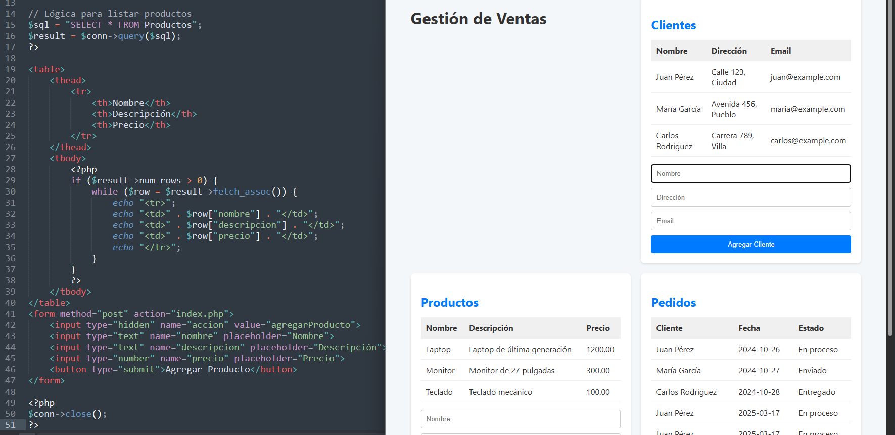

Contacto
¡Hablemos! Estoy disponible para nuevas oportunidades.
Correo electrónico: mateovalle96@gmail.com@gmail.com

Desarrollador Backend Junior | Freelance
Apasionado por la tecnología y la resolución de problemas. Mi objetivo es crear soluciones innovadoras y eficientes.
Ver Mis ProyectosVigía de Red" es una aplicación de escritorio desarrollada en Python con una interfaz gráfica intuitiva, diseñada para el monitoreo continuo y la detección de dispositivos en redes locales. Utilizando la biblioteca Scapy, esta herramienta captura y analiza el tráfico ARP para identificar y registrar la presencia de nuevos dispositivos en la red.
"Gestión de Ventas Web" es una aplicación web completa desarrollada en PHP y MySQL, diseñada para simplificar y optimizar la gestión de ventas de cualquier negocio. Con una interfaz intuitiva y un diseño moderno, esta herramienta permite a los usuarios gestionar clientes, productos y pedidos de manera eficiente, sin necesidad de conocimientos técnicos avanzados.
¡Hablemos! Estoy disponible para nuevas oportunidades.
Correo electrónico: mateovalle96@gmail.com@gmail.com